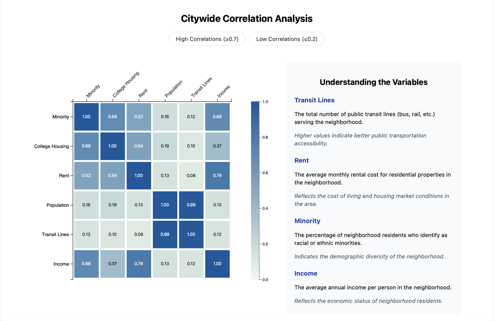

Demo Video
Embedded MP4 demo video using the HTML5 <video> tag. For example, this screen recording Prof. Cody Dunne made of Mike Bostock's flexible transitions in D3 slide:
Visualization explanation
slide placeholders
Each visulzation should have UI walkthrough and deisgn justification
MBTA Ridership Map
placeholder
Table
placeholder
Correlation Analysis Heatmap
Our correlation analysis tool is designed with clarity and user engagement in mind. At the top, users first see the neighborhood name and two intuitive filter buttons that help highlight important patterns - high correlations (≥0.7) and low correlations (≤0.2). These filters allow users to quickly identify the strongest and weakest relationships between variables.
The central heatmap uses a soft blue color gradient that increases in intensity with stronger correlations. We chose blue because it's widely accessible for colorblind users and creates a professional, trustworthy feel. Each cell displays both color and the actual correlation value for precision. When users hover over any cell, a tooltip appears showing the exact relationship between variables (for example, "Transit Lines × Population, Correlation: 0.990"). This interactive feature helps users explore specific relationships they're interested in.
To aid understanding, we placed a variable explanation panel directly next to the heatmap. This side-by-side layout ensures users can easily reference variable definitions while exploring correlations. The panel includes both straightforward descriptions of each variable and practical interpretations of what the values mean for the neighborhood. We also included a "Understanding Correlation Values" guide that breaks down how to interpret different correlation strengths, using plain language rather than statistical jargon.
Interactive Features and Linking
The visualization is dynamically linked to each other - when users click on different station on the map, it will highlight the neighborhoods in the table, and the heatmap instantly updates to show that neighborhood's specific correlation patterns. This linking creates a seamless exploration experience, allowing users to quickly glimpse across different areas of the city.
Data Analysis
Dataset Overview
Our analysis utilizes two primary datasets and one derived dataset focusing on Boston's neighborhoods, transit systems, and demographic information:
Boston Neighborhood Populations Dataset
Contains 2020 census data for Boston neighborhoods, including detailed demographic breakdowns.
| Data Type | Variables |
|---|---|
| Categorical | Race (White, Latino, Asian, etc.), Age groups, Field Concept, Type of institution |
| Quantitative | Total Population, Household Population, Household size, Average rent (2019-2021) |
MBTA Stations Dataset
Contains detailed information about MBTA transit stations including their locations and lines from MBTA. We gathered the information from MBTA Api and MBTA Ridership Map
| Data Type | Variables |
|---|---|
| Categorical | Name, Municipality, Line |
| Quantitative | Latitude, Longitude |
Data Preprocessing Steps
- Transit Line Counting:
- Manually counted unique transit lines per neighborhood using the MBTA stations dataset
- Created a mapping between stations and neighborhoods
- Verified station locations against neighborhood boundaries
- Demographic Data Processing:
- Calculated minority percentage from racial composition data and college housing percentage from institutional housing data
- Correlation Analysis:
- Generated neighborhood-specific correlation matrices and stored it as JSON
Task Analysis
The task table outlines a series of domain-specific questions related to public transportation, housing, and population density within the Boston area. We aim to explore key relationships and comparisons within the data, focusing on transportation accessibility, housing quality, rent prices, and population distribution.
The ultimate goal is to derive meaningful insights about transportation infrastructure and housing dynamics. For example, identifying areas with balanced accessibility, understanding relationships between housing density and transportation options, and exploring disparities in public transit coverage.
| Index (ID #) | Domain Task | Analytic Task (Low-level, "Query") | Search Task (Mid-level) | Analyze Task (High-level) |
|---|---|---|---|---|
| 1 | Is there a relationship between transportation options and housing density? | Compare | Explore | Discover |
| 6 | Of population density and housing quality, which correlates more closely to more public transportation options? | Compare | Explore | Record |
| 3 | Which area of Boston is best served by public transportation? | Identify | Locate | Present |
| 4 | Which area of Boston strikes a balance between housing prices and quality of public transportation? | Identify | Locate | Record |
| 2 | Is there a relationship between distance from a metro stop and housing prices? | Compare | Explore | Derive |
| 5 | Which metro line serves the most affluent areas? | Identify | Browse | Present |
| 9 | Are there areas with similarly high population density that are not served by public transit? | Identify | Locate | Present |
| 11 | Identify areas that balance population density, rent prices, and transportation accessibility? | Identify | Locate | Present |
| 8 | Do areas that are served by the commuter rail have higher population density than areas without? | Compare | Explore | Discover |
Design Process
Sketches and design choices to justify final visualization.
Expectation: Evidence of iterative improvement. Logical discussion of design choices grounded in theory from course. Discusses feedback from usability testing.
Conclusion
Short summary of work completed and areas for improvement/future-work.
Expectation: Meaningfully wraps up project and has good future directions.
Acknowledgments
List here where any code, packages/libraries, text, images, designs, etc. that you leverage come from.
- D3: Data-Driven Documents by Mike Bostock.
- Polyline Library from the Mapbox company.
- Pure CSS responsive "Fork me on GitHub" ribbon by Chris Heilmann.